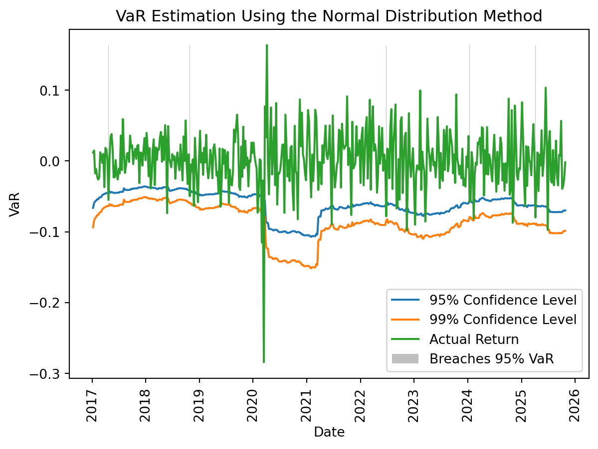
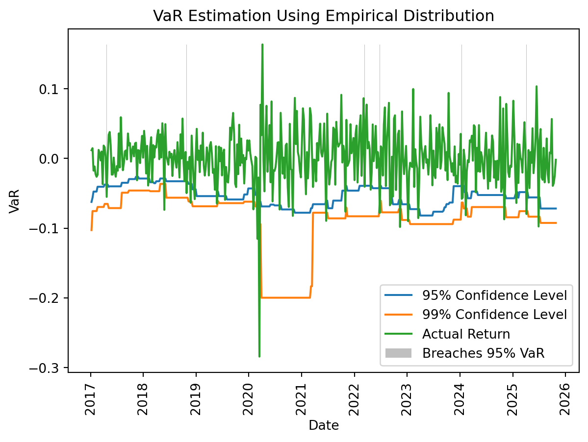
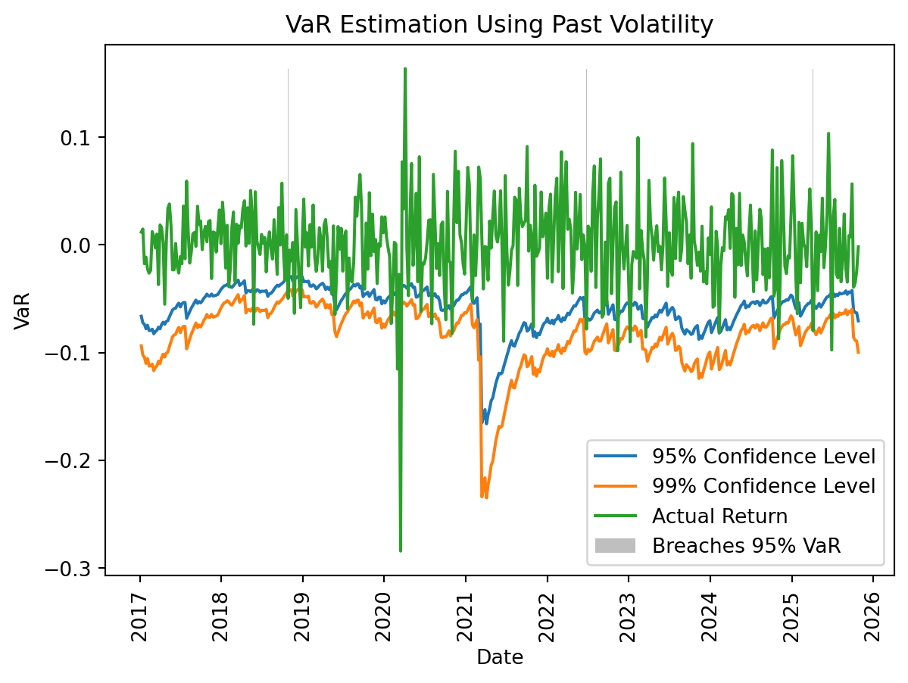

Value at Risk, commonly known as VaR, is a foundational concept in risk management, widely used by financial institutions to quantify and control risk exposure (Morgan and Reuters 1996). Essentially, VaR answers the question, “What is the maximum potential loss over a given time period within a specified confidence interval?” The confidence interval here represents the range within which we expect a certain percentage of returns to fall. For instance, with a 95% confidence interval, we anticipate that only 5% of cases will breach this lower threshold. The closer the model’s expected breaches are to the actual empirical frequency, the better the model’s accuracy.
VaR provides a standardized way to assess risk, helping firms to understand potential losses and allocate capital effectively (Jorion 2007). Regulators also rely heavily on VaR; in fact, this method is embedded directly in EU financial regulations, requiring banks to hold capital reserves proportional to their risk exposure (Ong 2007). By setting a standardized measure for risk, VaR supports financial stability and resilience, making it invaluable for both risk managers and regulators.
In this lecture, we’ll see that VaR is not a single, fixed method. Its accuracy and effectiveness depend on one crucial element: how volatility is predicted. Different approaches to forecasting volatility result in varying VaR outcomes, each with its strengths and limitations. By exploring these nuances, we’ll gain a deeper understanding of both the power and the limitations of VaR as a risk management tool.
We start by loading the data from lecture 3:
import pandas as pddf = pd.read_pickle('data/X.df')df
Symbol
EQNR
NHY
TEL
YAR
Optimal
Date
2016-01-10
-0.118288
-0.137636
-0.008125
-0.058065
-0.089576
2016-01-17
-0.060966
-0.054818
-0.085838
-0.047905
-0.069715
2016-01-24
0.060966
0.023505
0.049143
0.001741
0.057380
2016-01-31
0.074498
0.024710
-0.007077
-0.053584
0.052223
2016-02-07
0.027490
0.065780
-0.029552
0.024170
0.013914
...
...
...
...
...
...
2025-07-06
0.026730
0.021321
0.010887
0.021778
0.021116
2025-07-13
0.042289
0.041652
-0.004469
0.023654
0.028223
2025-07-20
-0.027114
-0.007206
0.040745
-0.006776
-0.003437
2025-07-27
-0.030583
0.047819
-0.027399
0.014796
-0.022925
2025-08-03
0.038459
-0.036054
0.001892
-0.010360
0.020430
500 rows × 5 columns
Backtesting VaR
To understand the effectiveness of Value at Risk (VaR), we can test its accuracy by evaluating actual financial data and examining how well different VaR models predict risk.
Specifically, VaR is expected to forecast a certain number of “breaches”—cases where the return falls below the calculated lower bound—relative to the total sample of returns. The closer the model’s predictions align with the actual frequency of breaches, the more reliable the model is.
To carry out this backtest, we’ll define a function to calculate VaR for historical returns from a financial time series. The function takes the following inputs: - A general function, f(x, sigmalist), which calculates the 95% and 99% VaR and returns an updated volatility (if applicable). This function uses historical data x and past volatility sigmalist. The specific function provided will determine the method used for VaR calculation. - A pandas DataFrame df containing historical data. - The name of the data series in df. - An estimation window, specifying the number of periods used to estimate the current VaR.
The function will return: - The 95% and 99% VaR for each date, - The estimated volatility (if applicable), - The corresponding dates, - The associated returns.
Below is the function for generating the backtest:
import numpy as npdef generate_backtest(f, df, name, estimation_win_size):# Initialize lists to store calculated values datelist = [] sigmalist = [] d95list = [] d99list = [] ret = []# Iterate over returns to calculate and store VaR and volatility estimatesfor t inrange(estimation_win_size, len(df)):# Record date and current return datelist.append(df.index[t].date()) ret.append(df[name].iloc[t])# Extract data from the estimation window (t-estimation_win_size to t-1) x = df[name].iloc[t-estimation_win_size:t-1]# Apply the provided VaR estimation function using the historical data and past volatility d95, d99, sigma = f(x, sigmalist)# Append the estimates to their respective lists sigmalist.append(sigma) d95list.append(d95) d99list.append(d99)# Return the results as numpy arrays for ease of analysisreturn (np.array(d95list), np.array(d99list), np.array(sigmalist), np.array(datelist), np.array(ret))
This setup allows for a flexible approach to testing different VaR models by simply passing different VaR estimation functions into generate_backtest. The returned data can then be used to evaluate the model’s effectiveness by comparing predicted breaches against actual outcomes.
Evaluation Function
After generating the VaR time series, we need an evaluate function to assess the model’s effectiveness. This function will take the following arguments: - A plot object plt to visualize the performance, - The estimated 95% and 99% VaR series, - The returns, - The dates, - A heading for the plot.
The function will produce an informative graph with bars wher there are breaches, and display the model’s performance by calculating the percentage of breaches. Here’s the function:
import matplotlib.pyplot as pltdef evaluate(plt, d95, d99, ret, dates, heading):# Clear the plot area to avoid overlapping plots plt.cla()# Plot the 95% VaR, 99% VaR, and actual returns plt.plot(dates, d95, label='95% Confidence Level') plt.plot(dates, d99, label='99% Confidence Level') plt.plot(dates, ret, label='Actual Return')# Highlight instances where returns breach the 95% VaR maxret =max(ret) breaches_95 = [maxret if d > r else0for d, r inzip(d95, ret)] plt.bar(dates, breaches_95, color='gray', alpha=0.5, width=0.5, label='Breaches 95% VaR')# Set labels and title plt.ylabel('VaR') plt.xlabel('Date') plt.title(heading) plt.xticks(rotation=90) plt.legend(loc="lower right") plt.subplots_adjust(bottom=0.15) plt.show()# Calculate and print the breach percentage for each confidence level backtest_results = [np.round(sum(d > ret) /len(ret) *100, 1) for d in [d95, d99]]for i, level inenumerate([95, 99]): breaches =sum([d95, d99][i] > ret)print(f"{heading} with {level}% confidence interval:\n"f"Breaches: {breaches}\n"f"Backtesting (Realized VaR - % breaches): {backtest_results[i]}%\n")
This function provides a visual and numerical evaluation of VaR accuracy. The plot shows the 95% and 99% VaR levels alongside the actual returns, with breaches of the 95% VaR highlighted. The function then calculates and prints the percentage of breaches, allowing us to assess how well the model aligns with expected outcomes.
Methods for Calculating VaR
Calculating Value at Risk (VaR) fundamentally involves predicting volatility. A model that can accurately predict volatility will yield a more reliable VaR estimate. Here, we’ll explore three different methods for calculating VaR: using the normal distribution, empirical frequencies, and past volatility.
The Normal Distribution Model
The most straightforward approach is to assume that returns follow a normal distribution. We can estimate the standard deviation (volatility) of a sample x and apply the normal distribution to compute VaR. That in practice just means multiplying the volatility with a number corresponding to the confidence interval, in this case given by the function norm.ppf(PVALS). This is implemented as follows
PVALS = [0.05, 0.01] # Confidence intervals (95% and 99%)from scipy.stats import normdef normal_est(x, sigmalist): z = norm.ppf(PVALS) # Z-scores for the specified confidence levels sigma = np.std(x, ddof=1) # Sample standard deviationreturn z[0] * sigma, z[1] * sigma, sigma
The global variable PVALS sets the confidence levels, making it easy to adjust later, though 95% and 99% are almost always used in practice.
Empirical Frequencies
An alternative method is to rely on empirical data, using historical quantiles to set the VaR thresholds. This method establishes limits that would have perfectly predicted historical data breaches at the 95% and 99% levels:
def historical_est(x, sigmalist): q95 =abs(np.quantile(x, PVALS[0])) # 95th percentile of historical losses q99 =abs(np.quantile(x, PVALS[1])) # 99th percentile of historical lossesreturn-q95, -q99, None# VaR values are negative to indicate potential loss
This approach is straightforward and does not assume any specific distribution of returns.
Past Volatility
A third method involves modeling volatility based on its past behavior. Using only the volatility from the previous period would imply constant volatility, so we introduce an innovation term—specifically, the squared error from the previous period. This error is added to the previous period’s variance and then square-rooted to estimate current volatility. If no prior volatility exists (e.g., in the first period), historical volatility is used.
After estimating the volatility, we can use the normal distribution to calculate VaR for each confidence interval. This type of volatility-based VaR estimation is required for financial firms under EU regulations (Banking Supervision 1996).
def last_volat(x, sigmalist): x = np.array(x) z = norm.ppf(PVALS)ifnot sigmalist: # If sigmalist is empty, use initial standard deviation sigma = np.std(x, ddof=1)else: # Update sigma based on past volatility and recent error sigma = (0.1* (x[0] - np.mean(x))**2+0.9* sigmalist[-1]**2)**0.5return z[0] * sigma, z[1] * sigma, sigma
These methods offer varied approaches to calculating VaR, each with specific strengths: the normal model assumes a normal distribution, empirical quantiles base predictions on historical breaches, and the volatility-based method adjusts dynamically, often aligning with regulatory requirements.
Evaluation
We can now easily evaluate the different methods. We first evalueat under the normal distribution.
NAME ='EQNR'ESTIMATION_WINSIZE =52(normal95, normal99, sigma, dates, ret )= generate_backtest(normal_est, df, NAME, ESTIMATION_WINSIZE)evaluate(plt, normal95, normal99, ret, dates,'VaR Estimation Using the Normal Distribution Method')

VaR Estimation Using the Normal Distribution Method with 95% confidence interval:
Breaches: 25
Backtesting (Realized VaR - % breaches): 5.6%
VaR Estimation Using the Normal Distribution Method with 99% confidence interval:
Breaches: 10
Backtesting (Realized VaR - % breaches): 2.2%
Then we apply the function that simply calculates the empirical distribution of passed returns:
(hist95, hist99, sigma, dates, ret )= generate_backtest(historical_est, df, NAME, ESTIMATION_WINSIZE)evaluate(plt, hist95, hist99, ret, dates,'VaR Estimation Using Empirical Distribution')

VaR Estimation Using Empirical Distribution with 95% confidence interval:
Breaches: 32
Backtesting (Realized VaR - % breaches): 7.1%
VaR Estimation Using Empirical Distribution with 99% confidence interval:
Breaches: 13
Backtesting (Realized VaR - % breaches): 2.9%
And at last, we use information about the previous period volatility.
(last95, last99, sigma, dates, ret )= generate_backtest(last_volat, df, NAME, ESTIMATION_WINSIZE)evaluate(plt, last95, last99, ret, dates,'VaR Estimation Using Past Volatility')

VaR Estimation Using Past Volatility with 95% confidence interval:
Breaches: 27
Backtesting (Realized VaR - % breaches): 6.0%
VaR Estimation Using Past Volatility with 99% confidence interval:
Breaches: 14
Backtesting (Realized VaR - % breaches): 3.1%
Concluding Remarks
VaR (Value at Risk) provides an effective framework for communicating risk and has undoubtedly become the standard for measuring and controlling market risk. However, its ability to capture real risk depends heavily on its implementation. Risk is not static; it evolves continuously, responding to changing market conditions and external factors.
Dynamic measures can help anticipate shifts in risk, but as we have seen from the examples, they do not always outperform static measures. Predicting changes in risk is inherently challenging, and no single approach guarantees accurate foresight.
A notable example of these limitations is the case of Long-Term Capital Management (LTCM) (Lowenstein 2000). LTCM was managed by some of the brightest minds in finance, including Nobel laureates Myron Scholes and Robert C. Merton, the inventors of the renowned option pricing formula. Despite their reliance on VaR and a perception that their portfolios were robust and healthy, the Asian financial crisis of 1997 exposed critical flaws in their risk models. The models proved inadequate against unforeseen events, and the fund ultimately had to be liquidated in early 2000.
These experiences serve as a stark reminder that VaR cannot be used uncritically. If a portfolio cannot be rebalanced quickly enough to adapt to shifting market conditions and declining liquidity, VaR offers little protection.
A skilled risk manager must also guard against the manipulation of VaR. Portfolio managers can exploit the model by selecting securities with hidden risks that VaR calculations fail to capture. A striking example is the Norwegian Oil Fund manager who reportedly earned bonuses amounting to nearly half a billion NOK, seemingly by taking significant risks (Dahl 2010).
High-risk investments often promise high returns, and employees with compensation structures linked to bonuses—without corresponding penalties for losses—are incentivized to take on excessive risk. Such arrangements function like an asymmetric option: they allow individuals to benefit from the upside while avoiding equivalent downside losses, fostering a strong incentive to maximize risk.
To address these challenges, a good risk manager works to minimize opportunities for such manipulation while maintaining vigilance for unobservable risk factors. Managing risk is not just about tools like VaR; it requires judgment, adaptability, and a proactive approach to identifying and mitigating hidden risks.
Literature
Banking Supervision, Basel Committee on. 1996. “Amendment to the Capital Accord to Incorporate Market Risks.” Bank for International Settlements.